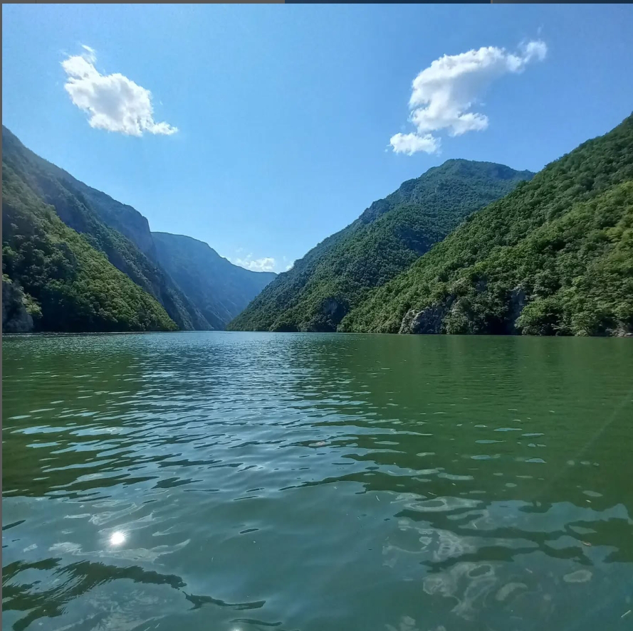

Perućac
Perućačko jezero nastalo je pregrađivanjem toka reke Drine šezdesetih godina dvadesetog veka. Stvorena je akumulacija duga 54km koja se proteže na potezu od Perućca do Višegrada.Veći deo jezera je kanjonski deo koji počinje od 7km (od brane Perućac). Odlikuje se raznovrsnošću biljnog i životinjskog sveta, ali i retkih vrsta poput Pančićeve omorike i mrkog medveda. Kanjon reke Drine je jedan od najdubljih kanjona u svetu, posle kanjona reke Kolorado i reke Tare u Crnoj gori. Prosečna dubina jezera je 60m, a najveća širina koju dostiže jednaka je jednom kilometru.